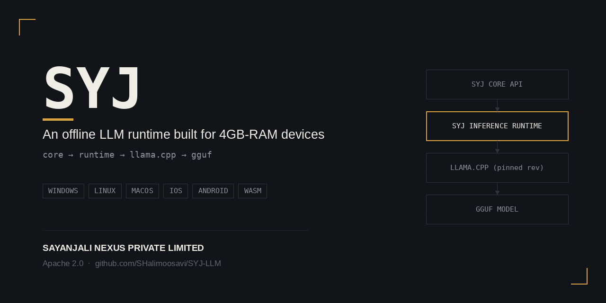
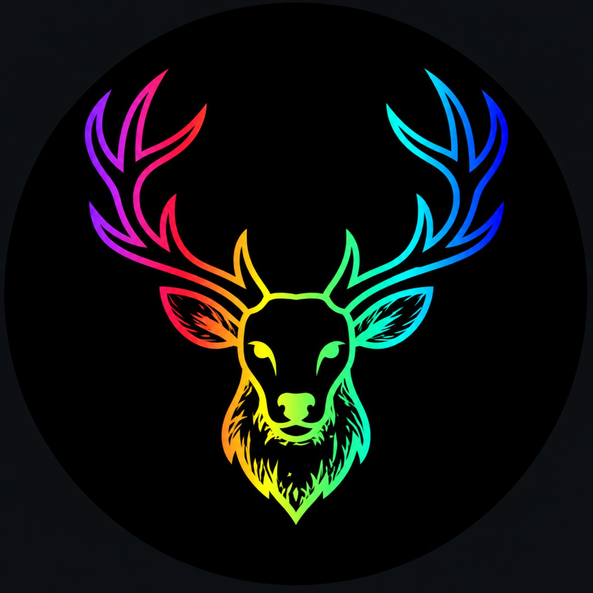
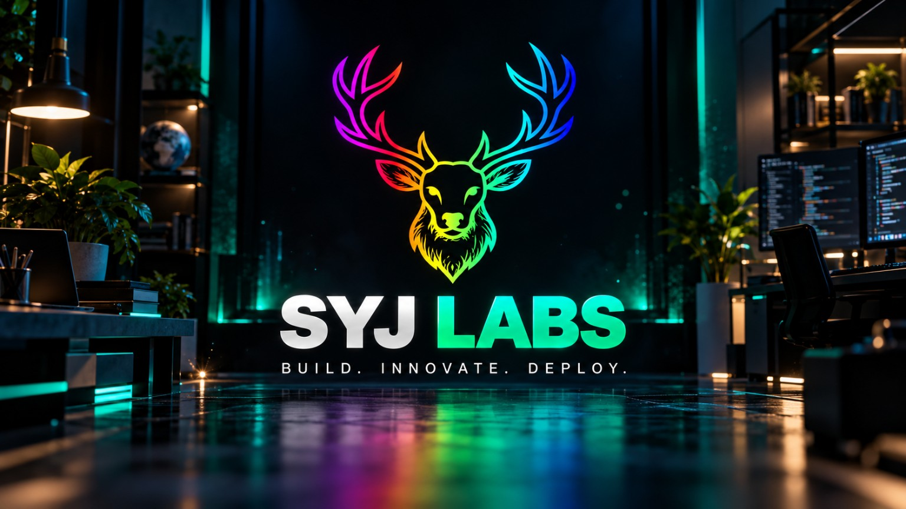
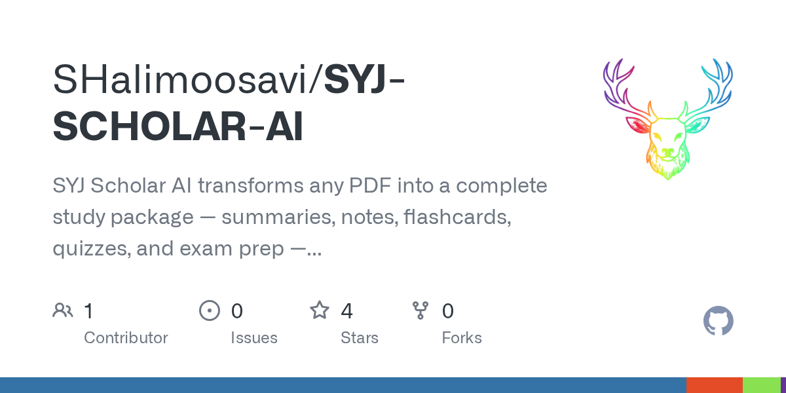
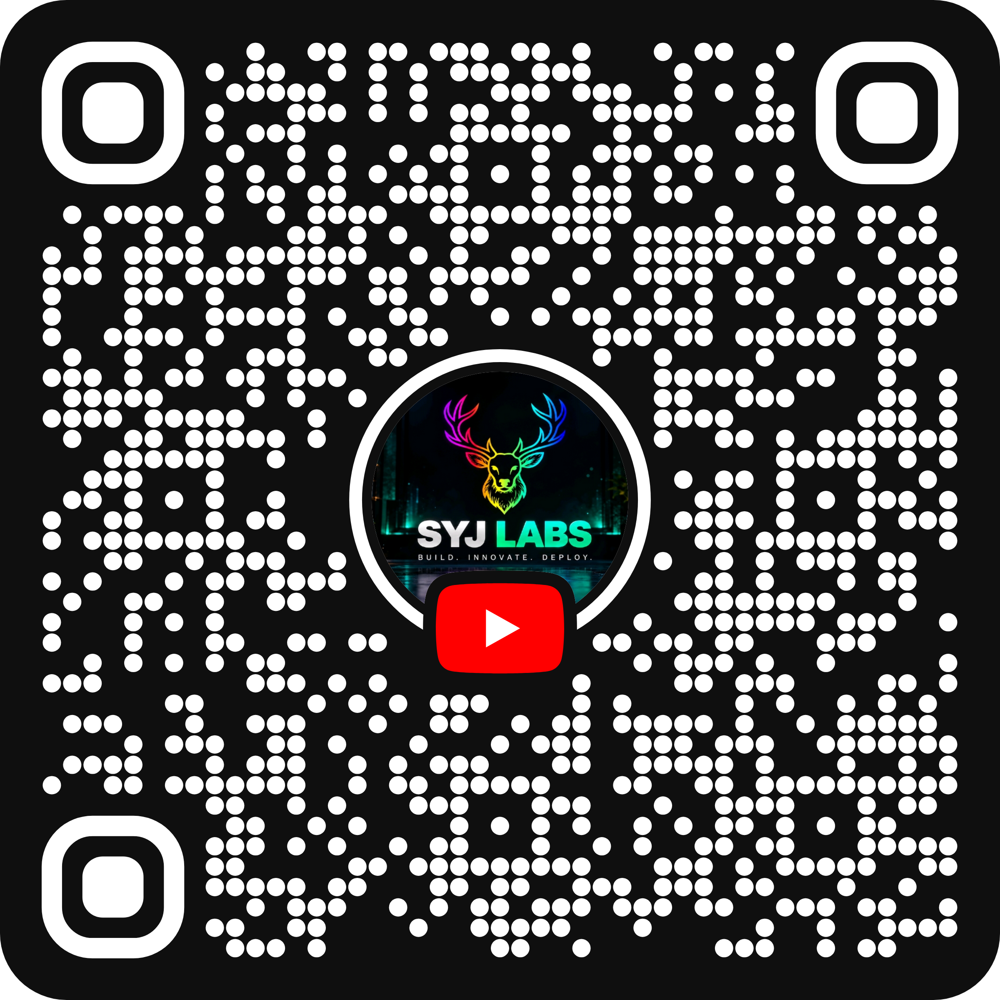

01 / AISYJ-LLM
An open development project focused on large language model engineering. Visit the repository for the current implementation and project notes.
Explore repository ↗
SYJ LABSBUILD. INNOVATE. DEPLOY.INDEPENDENT TECHNOLOGY LAB
We learn by building. From AI tools and blockchain infrastructure to useful software and automation, SYJ LABS turns technical curiosity into practical projects.

SELECTED WORK
Explore the repositories, inspect the code, and follow the work as it evolves. Project status and capabilities are described conservatively and linked to their source.

01 / AIAn open development project focused on large language model engineering. Visit the repository for the current implementation and project notes.
Explore repository ↗
02 / LEARNINGTurn PDFs into study notes, flashcards, quizzes and exam preparation with an AI study companion designed for Android and Termux.
Find on GitHub ↗A blockchain launchpad project with a source repository available for technical exploration and progress tracking.
Explore repository ↗Blockchain ecosystem development work. Consult the repository for its documented scope, code and current status.
Explore repository ↗An OSINT tooling project exploring domain and network intelligence workflows. Check GitHub for the current repository details.
Find on GitHub ↗A trading-logic software project. Review the source and documentation for its intended use and current capabilities.
Explore repository ↗WHAT WE WORK ON
Practical AI tools, language-model experiments and intelligent workflows built around real use cases.
Web3 applications, blockchain infrastructure and developer tools designed for transparent, verifiable systems.
Production-minded web apps, backend services, clean architecture and open-source product development.
Repeatable workflows and lightweight tools that reduce manual work and improve operational efficiency.
THE PERSON BEHIND THE LAB
SYJ LABS is the technology-building identity of Syed Ali Hasan Moosavi, Founder and Managing Director of SAYANJALI NEXUS PRIVATE LIMITED. The focus is hands-on development: learning deeply, building practical systems, sharing work, and improving through iteration.
This portfolio highlights selected work. For the most accurate project status, source code and technical details, use the linked repositories.
FOUNDER & MANAGING DIRECTOR
SAYANJALI NEXUS PRIVATE LIMITED
FOLLOW THE WORK
Follow the SYJ LABS YouTube channel for updates, experiments and technology content. Scan the channel QR code or open the channel directly.
Visit YouTube channel ↗The supplied QR artwork is included below. Confirm its destination before publishing the live channel link.
SCAN TO WATCHLEARN. BUILD. DEPLOY. EARN.